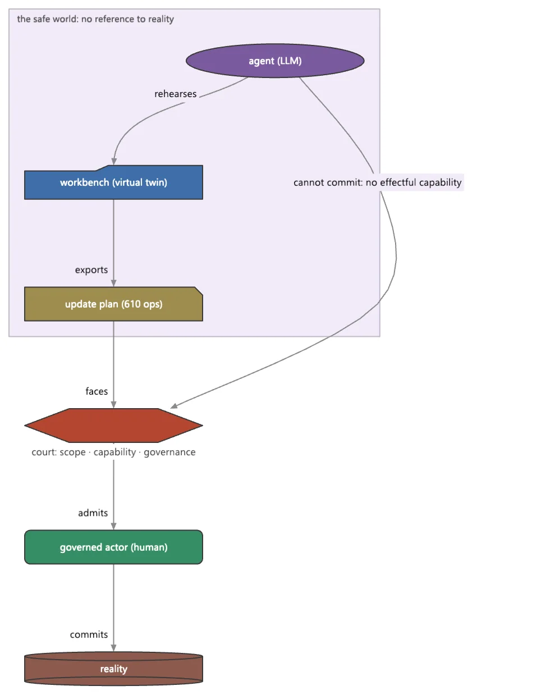

Agents et conversation
L'inverse gouverné de LangChain : le modèle propose et n'agit jamais ; répétition dans un monde sûr, puis commit.
4 Strong · 4 Solid · 3 Partial · 1 Emerging
Mesuré contre : LangChain · AutoGen · Semantic Kernel · Dossiers : base/agentic(s'ouvre dans un nouvel onglet) · base/conversation(s'ouvre dans un nouvel onglet) · Le guide des fonctions de ce domaine

Repensé depuis les premiers principes
Ce que Softanza a gardé de ce qui marche, et ce qu'elle a repensé, tel que la bibliothèque l'a écrit dans ses documents de conception et ses narrations.
La manière SoftanzaSoftanza ne cherche pas à fabriquer un agent sûr ; il bâtit un monde sûr et y laisse travailler des agents ordinaires.
Gardé des meilleures pratiques
- La forme habituelle d'un agent est conservée : une boucle avec un but, des outils, une mémoire et des compétences. Le vocabulaire courant s'y retrouve terme à terme. source(s'ouvre dans un nouvel onglet)
- Un changement est d'abord un plan, validé et relu, puis exécuté par un autre acteur avec une piste d'audit. C'est la discipline connue du « relire avant d'appliquer ». source(s'ouvre dans un nouvel onglet)
- Un humain reste dans la boucle. Tout refus peut remonter à un point de contrôle humain, qui garde le contexte et expire faute de réponse. source(s'ouvre dans un nouvel onglet)
Repensé
- Un agent répète dans un atelier virtuel sans aucun lien avec le réel ; il ne peut donc pas s'en échapper. Seul un plan en sort, exécuté par un autre acteur. source(s'ouvre dans un nouvel onglet)
- L'esprit de l'agent est programmatique par défaut. Un modèle de langage n'est qu'une faculté enfichable, qui propose sans jamais agir : aucune suggestion non vérifiée ne devient une action. source(s'ouvre dans un nouvel onglet)
- Un agent doit déclarer ce qu'il couvre et à quel point ses actes sont réversibles. Sinon, il est refusé avant sa première exécution, quand le refus ne coûte encore rien. source(s'ouvre dans un nouvel onglet)
- Softanza pose les questions au lieu de deviner. L'écart entre un but déclaré et le savoir acquis produit la question suivante, et chaque réponse est vérifiée avant d'être admise. source(s'ouvre dans un nouvel onglet)
A deliberate inversion of LangChain and AutoGen: a governed, declarative substrate where an LLM only proposes and can never act. It is strongest exactly where the peers are weakest — safety, governance, determinism — and deliberately absent exactly where they lead: LLM-driven tool selection, autonomous planning, live multi-agent chat, and RAG.
Ce qu'un artisan en fait, et ce qui se distingue
- safe-world binding: a genuine category-of-one
- a provable governance graph (five static invariants)
- agents as .pia files judged at load
- a Zig-owned tick loop with no callback into Haro
Ce qui est dû
- LLM-driven tool selection, gated
- wire RAG into agents
- plan negotiation (Receive / Revise)
- live multi-agent orchestration
La manière Softanza, exécutée
Ce que Softanza fait autrement dans ce domaine, montré par du code tiré de ses narrations et de ses gardes, et exécuté pour cette page.
Une composition où un modèle de langage atteint directement une action, sans gardien entre les deux, est jugée non conforme avant toute exécution.
oBad = new stzAgentGraph("mailer-bad")
oBad.AddLLMActor("writer")
oBad.AddEffect("send")
oBad.Proposes("writer", "send")
chk("llm-straight-to-effect is NOT sound", oBad.IsSound() = 0)
chk("multiple invariants fire", len(oBad.Violations()) >= 3)
chk("Explain names the refusal", len(StzFind("REFUSED", oBad.Explain())) > 0)[OK] llm-straight-to-effect is NOT sound [OK] multiple invariants fire [OK] Explain names the refusal
exécuté le 2026-10-01 21:17 dans la bibliothèque au commit 0e72e2e2c ; tiré de base/test/agentic/agentgraph_narrated.ring(s'ouvre dans un nouvel onglet)
Les articles de ce domaine (3)
- Smart Adverb Generation in Softanza 2025
- From "Quick" to "Quickly": Programmatic Adverb Formation 2025
- Agents That Cannot Hurt You 2026
Les couloirs, un par un
Les couloirs et leurs notes sont cités tels qu'ils ont été lus à la source, le Read from the source on 2026-09-16.